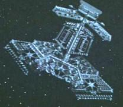

Epsilon IX
Riciclati
Episodi
Star Trek I

Collocata nei pressi del confine con l'
Impero Klingon
, distrutta nel
2271
da
V'ger
.
Riciclati
L'interno di
Epsilon IX
diventa una parete della sala d'aspetto dello scalo di
Star Trek II
.